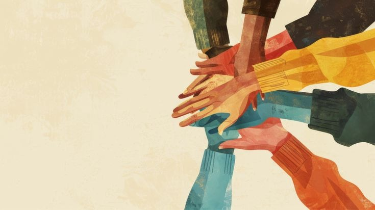

Join KindredPune
Be the hand that pulls someone in.
Join as an NGO desk, volunteer, or civic supporter. The network is designed to make contribution clear, useful, and immediately connected to where the city needs it most.
Choose your path
Different entry points, one civic layer
Everyone enters the system differently. The page makes those pathways feel legible from the first click.
Join as an NGO
Bring ward knowledge, desk operations, and response capacity into the shared intelligence layer.
- Access routing boardYes
- Manage ward assignmentsYes
- Surface field notesYes
Join as a volunteer
Add your time, skills, and availability so the system can match you where your help has the best fit.
- Distance-aware matchingIncluded
- Skill-based tasksIncluded
- Flexible schedulesIncluded
Join as a supporter
Fund or strengthen the civic network with reporting that stays attached to real ward outcomes.
- Coverage reportingIncluded
- Impact snapshotsIncluded
- Partner visibilityIncluded
Join as a civic ally
Offer introductions, local insight, field referrals, or on-ground coordination support as the network grows.
- Neighborhood referralsWelcome
- Local facilitationWelcome
- Advocacy supportWelcome
Apply now
A calm intake layer, not a cold form wall
This is a visual application block for the prototype. It is styled as a real product page even before backend wiring.
Tell us how you want to join
We route people into the network with context.
- 1. Intake reviewWithin 48 hours
- 2. Role matchingBased on fit
- 3. Desk or field onboardingSimple handoff
network@kindredpune.org
Prototype contact details are shown as visible system behavior for the launch-ready experience.
Already registered? Log in here.
Questions
Common questions, answered without friction
A strong join page lowers uncertainty. These blocks keep the tone human and clear.
Do I need to be part of an NGO to join?
No. Volunteers, local allies, and supporters can enter through their own pathway and be matched appropriately.
How are volunteers matched?
The prototype shows distance, time window, and skill-aware matching so help is practical, not random.
Can CSR teams see impact?
Yes. The impact layer is built to show coverage, response, and ward movement grounded in operational data.
Is this only for Pune?
This launch concept is centered on Pune wards, with the design language shaped around its civic context.